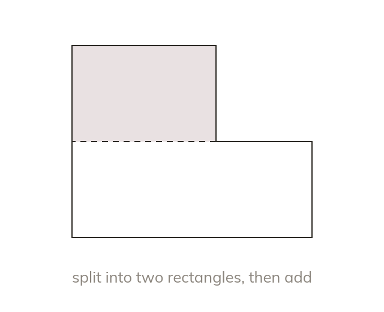

Split or subtract
Split a compound shape into simple shapes and add their areas. Or take a piece away from a larger shape.
A compound shape can be split into rectangles, triangles, parallelograms and trapeziums whose areas are added. It can instead be treated as a larger shape with a piece taken away.